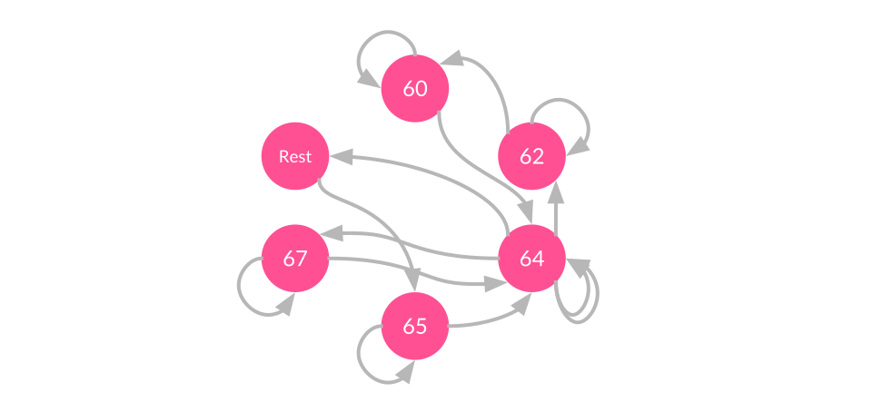

Part 1: Algorithmic Composition
Algorithmic Music Composition is an active field of research which marries the fields of computer science and music composition to design computer systems that compose music.
The applications of algorithmic music are wide-ranging, and as you will see throughout the examples in this tutorial, having a computer that composes music doesn't mean that humans are left out of the process! Instead, by keeping our eyes, ears and minds open as we tumble from one experiment to the next, we discover new ways to appreciate music, new ways of interacting with music, and new ways to be creative.
The Building Blocks of Music
This is a note.
Tap anywhere on the canvas to play a note! Horizontal position controls pitch, vertical position controls velocity.
Notes are characterized by their pitch, velocity and timing information.
Musical pitch refers to how high- or low-pitched the note sounds. This characteristic comes from the oscillating frequency of the sound wave producing that note.
Frequency is a continuous value, which means that 440Hz and 440.00001Hz are both equally valid, and there are an infinite number of possible pitch frequencies. However, Western music typically restricts itself to a particular subset of standard pitch frequencies, and we give names to these standard frequencies such as “A3”, “C5”, “F#4” and so on.
Pitch names like “D#4” may be familiar to you depending on how comfortable you are with music theory, but if you don’t know your sharps from your flats, fret not! There is an alternate naming scheme called MIDI note numbers, which simply labels each standard frequency with a number which increases as the pitch gets higher.
By using MIDI note numbers, we don't need to remember specific pitch frequencies or formulae; MIDI numbers also possess easy mathematical shortcuts - for example, to go up or down an octave we simply add 12 to the MIDI note!
Easy, right?
MIDI note numbers make it easier for digital musicians to work with musical pitches. Try clicking on each of the notes to get a feel of how MIDI numbers affect pitch! (Depending on your speakers/headphones, certain low- or high-frequency pitches may not sound so clear. Notes around MIDI number 70 generally show up clearly on laptop speakers.)
The velocity of a note indicates how hard a note is struck. Primarily, this influences how loud the note is played, but depending on the implementation of your synthesizer’s instrument voice, velocity may also have an effect on timbre and other sound characteristics. For the purpose of this tutorial, we can simply think of velocity as the same thing as volume.
The last bit, timing information, needs to include both the attack and release times for that particular note (which can equivalently be represented as onset time and duration). This timing information can be expressed in terms of seconds or in musical time, which uses fractions relative to a composer-defined beats per minute (BPM).
With just these three simple properties, we actually have everything we need to get started making music. We can start with a single note:
var synth;
function setup() {
noCanvas();
synth = new p5.PolySynth();
var midiNoteNumber = 70;
var freq = midiToFreq(midiNoteNumber); // Convert MIDI note to frequency
// Play note number 70 with velocity 1, starting now, for a duration of 1s
synth.play(freq, 1.0, 0, 1);
}
And we can add more synth.play() functions to produce a series of notes that generate a song (see Part 1: About Time for a better way to do this):
synth.play(midiToFreq(60), 1.0, 0, 1);
synth.play(midiToFreq(62), 1.0, 1, 1);
synth.play(midiToFreq(64), 1.0, 2.5, 1);
synth.play(midiToFreq(65), 1.0, 5, 1);
// ... and so on
Which works, but it quickly becomes very tedious to type out every note one by one. In the age of computers and interactive programs, why should we do all the hard work? Can't we design computer programs that compose and play music for us?
It turns out, yes we can.
Dice Music
An algorithm is a set of steps and rules that can be followed to perform a certain task (a common analogy for this is a cooking recipe). In our case, we want to use algorithms which can be followed by a computer so that the computer may compose new music for us. However, algorithms are not limited only to computer programs, and humans have in fact been using algorithms to compose music for centuries!
The Musikalisches Würfelspiel (German for “musical dice game”) was popular in the 18th century for adding an element of chance to music composition. Typically, composers would prepare a set of musical phrases and use a dice to randomly put them in sequence.
In its simplest form, the algorithm might look something like this:
- Prepare a palette of musical phrases or notes which we can choose from.
- Start with an empty song.
- If the song is shorter than your desired length:
- Randomly select a piece of music from the palette, and add it to the song.
- Repeat Step 3.
- Your song is done, enjoy the music!
We can do something like this quite easily, by using p5 to randomly pick out a sequence of notes to construct a song. However, it turns out that randomly picking note pitches from anywhere in the spectrum does not sound very musical. We can get something that sounds more musical if we apply musical constraints to our algorithm, like picking notes from a specific scale (subset of pitch classes).
In the example below, we use the Major Pentatonic scale by default, but depending on the context of your composition you may want a different scale to help convey a specific mood. Feel free to change the dropdown Select menu to try out different scales (borrowed from gleitz’s gist)!
An example of using randomness in music composition. Notes are produced randomly from whichever scale you choose, and you can move your cursor around the sketch to transpose up and down octaves.
Fractal Music
The idea of fractals first emerged from the field of mathematics, describing a class of infinitely complicated objects possessing self-symmetry at different scales. This definition itself sounds infinitely complicated, but in fact it’s relatively easy to understand the basics (we leave the actual mathematics for another time!) once we look at some examples.
Let’s go ahead and do that right away. Perhaps the most popular example of a fractal is the Mandelbrot set, from which the following visualization is produced:

There are two main points of interest that we can pick out from the earlier definition:
- Infinitely complicatedThankfully, this doesn’t mean that fractals are impossible to understand. What it actually means is that a fractal is an infinite object, which in our case we can think of fractals as something which can generate new musical content forever. How wonderful!
- Self-symmetryThis is more easily seen than described: In the example of the animated Mandelbrot visualization above, we see that the Mandelbrot set is actually self-similar in increasingly small scales, so that when you zoom in enough you eventually see the same patterns emerge.
These two properties of fractals tend to create interesting patterns, which makes them popular subjects for generating art. The most popular manifestation of fractal art are visualizations (take a look at Dan Shiffman’s excellent fractals lesson on The Nature of Code), but we can just as well convert fractals to music, by mapping a fractal definition to musical information such as pitch, rhythm, or structure.
Let’s try to create our own fractal now!
There are a variety of methods we can use to generate fractals, but in this example we will focus on a particular grammar-based method called a Lindenmayer System, or L-System for short. Our L-System will require three things:
- A set of valid symbols
- A set of production rules of transforming each symbol into other symbols
- An initial sequence of symbols to start from
For simplicity, let’s say we use a handful of notes from the C major scale as our set of valid symbols. Let's take:
Symbols: A, C, E, F, G
We then need to define our production rules to transform one symbol into a new symbol(s). For example, an arbitrary set of rules might be:
A => C, F, E
C => G, E
E => C, G
F => A, C
G => E, F, C
Our initial sequence can be any of the valid symbols, even just a single C note. We then apply the following algorithm:
- Start with the initial sequence
- Repeat for as many iterations as you like:
- Begin a new empty sequence.
- For each note in the previous sequence:
- Add the result of its production rule to the new sequence.
Our current algorithm would result in the following:
Iteration 1: C
Iteration 2: G, E
Iteration 3: E, F, C, C, G
Iteration 4: C, G, A, C, G, E, G, E, E, F, C
… and so on.
Notice that our current strategy doesn't say anything about the durations of each note. It is entirely possible (and you should try this!) to come up with a fractal algorithm which generates timing and even velocity information as well, but for now we can quickly add some variety to our music by randomly assigning durations of either a whole-beat, half-beat, or quarter-beat to each note.
Check out the sketch below to see our algorithm at work!
An L-system is a system for generating fractals by using a set of production rules to transform strings of valid symbols into other valid symbols. Click on the STEP button to advance the algorithm one note at a time, or press PLAY to keep running!
Genetic Music
Let’s now approach the problem from an entirely different perspective - from the perspective of evolutionary biology.
Suppose we treat the problem of composing music as an evolutionary problem. We can imagine a fictional species of “Earworms”, creatures who are born with a song in their heart and live to sing their songs.
An Earworm is a fictional organism characterized by its "genetic song". Click on the Earworm to hear it sing!
However, not all Earworms are musically equal, and the ones who sing the best songs are also biologically “fitter”. Hence according to survival of the fittest, the Earworms with the best songs will survive and breed offspring for the next generation.
The next generation of Earworms, having inherited genes from parents who were the fittest of their generation, will on average be fitter than the generation before them. Then, following the theory of evolution, each generation of Earworms will continue to get better and better at singing - and eventually we will have a whole population of Earworms to sing and give us solutions to our music composition tasks!
So let’s outline the evolutionary process as an algorithm which we can write into a program:
- Begin with an initial population of randomly generated Earworms
- For as many generations as we like:
- Survive.
- Evaluate the fitness of all Earworms in terms of the quality of their songs.
- The fittest Earworms are chosen to survive from each generation
- Reproduce.
- While the population size is smaller than our desired size, repeat:
- A random pair of Earworms are chosen to produce offspring
- The songs of both parents are merged into a new song to be inherited by the offspring
- This new song undergoes random mutation to produce variation
- The new offspring is added to the population
- While the population size is smaller than our desired size, repeat:
- Survive.
Using this algorithm, we can write a program to simulate the evolution of random populations of Earworms!
Genetic algorithms are inspired by evolutionary biology. Use the buttons to see if you can breed a generation of Earworms that truly stick in a listener's head!
Markov Music
At this point, you might be thinking to yourself: Hang on, didn’t we set out to make life easier for ourselves? It really doesn’t feel easier - sure, the computer will produce the notes but that’s only after I spent hours painstakingly crafting the perfect production rules or fitness function! Isn’t there an algorithm that can maybe listen to good music and teach itself how to play?
As with most of the questions used to serve a point in this tutorial, the answer is yes.
A Markov chain is one such algorithm which can learn from past experiences. In particular, Markov chains model sequences of states, looking at past sequences to predict future states. This sounds powerful, and in fact it is: Markov chains are used in text prediction, speech recognition, weather forecasting, financial modeling, and simulating natural phenomena like in weather forecasts or even DNA modeling.
On top of that, they’re relatively straightforward and intuitive to understand.
Let’s say we want to model Twinkle, Twinkle, Little Star. The MIDI notes for the song starting at MIDI number 60 (Middle C) is:
60, 60, 64, 64, 67, 67, 64, Rest, 65, 65, 64, 64, 62, 62, 60To build our Markov chain, it helps to write out a transition table which lists all the transitions that each note has made in the past:
60: 60, 64
62: 62, 60
64: 64, 67, rest, 64, 62
65: 65, 64
67: 67, 64
Rest: 65
We can also illustrate this as a network of nodes (states) and edges (transitions between states), known in computer science-speak as a graph:
When we want to predict the next note of a sequence, we simply look up our most recent note in the transition table and pick a random transition to one of the possible next-states! For example, if we want to generate a new sequence beginning with 67, the next note that we choose could be either 67 again, or 64 (with equal probability). Then, we simply continue transition from state-to-state following the graph above, and can generate sequences for as long as we like.
One problem with this current implementation though, is that we can only produce monophonic (single voice) music. To support polyphony, we need to change our data representation of each state from a single note with fixed duration, to each state being either a note-on or note-off event (like we saw previously in Part 1). By using note-on and note-off events as states, we can have a chance of reaching multiple note-on states we have to turn the notes off, hence allowing multiple notes to sound at once.
Let’s try to put all this into practice now!
We’ll create an example which records what a user plays through the keyboard, and uses that information to build a Markov chain on the fly.
Each state in the Markov chain contains information about the pitch, event type (note-on or note-off), as well as time since the previous event. The code used to register the user’s input into these states is shown below:
function keyPressed() {
var keyIndex = keyOrder.indexOf(key);
// Check if valid note key pressed
if (keyIndex >= 0) {
// Play synth
var midiNoteNumber = baseNote + keyScale[keyIndex]; // 0-127; 60 is Middle C (C4)
var freq = midiToFreq(midiNoteNumber);
synth.noteAttack(freq, velocity, 0);
// Register node
graph.registerNewNode(1, midiNoteNumber, ticksSincePrevEvent); //keyStates[keyIndex]);
// Activate key state
keyStates[keyIndex] = 1;
}
ticksSincePrevEvent = 0;
}
function keyReleased() {
var keyIndex = keyOrder.indexOf(key);
// Check if valid note key pressed
if (keyIndex >= 0) {
// Stop synth
midiNoteNumber = baseNote + keyScale[keyIndex]; // 0-127; 60 is Middle C (C4)
freq = midiToFreq(midiNoteNumber);
synth.noteRelease(freq, 0);
// Register node
graph.registerNewNode(0, midiNoteNumber, ticksSincePrevEvent);
// Reset key state
keyStates[keyIndex] = 0;
}
ticksSincePrevEvent = 0;
}
After recording, the Markov chain can generate new music by randomly traversing the graph:
function soundLoop(cycleStartTime) {
// Play the sound of this node
var midiNoteNumber = graph.nodes[latestNodeId].pitch;
var freq = midiToFreq(midiNoteNumber);
var type = graph.nodes[latestNodeId].type;
if (type == 1) {
synth.noteAttack(freq, velocity, cycleStartTime);
} else {
synth.noteRelease(freq, cycleStartTime);
}
// Transition to a random new node
if (graph.edges[latestNodeId].length) {
latestNodeId = random(graph.edges[latestNodeId]);
}
// Wait for the timeFromPrevEvent of the new node
var duration = graph.nodes[latestNodeId].duration * secondsPerTick;
this.interval = max(duration, 0.01); // Cannot have interval of exactly 0
}
And that's about it! The full example is shown below:
A Markov chain learns from past information to predict or compose new sequences. Start by playing ASDFGHJKL on the keyboard, then press PLAY to let the Markov chain imitate your style!
What's Next?
We've reached the end of this lesson, but don't stop here!